第3回 - オープンラボ岡山
- 修了しました。
?収支報告
参加者数 30名（講師4名）
参加費徴収 26名（講師は参加費を徴収しませんでした。）
[収入]
繰越金 420（前回余計に100円払った人が見つかりましたので返金しました。）
参加費 13,000（500 x 26）
懇親会残り 2,803
-------------------------
収入合計：16,223
[支出]
会議室 13,200
-------------------------
支出合計：13,200
---------------------------------------
収入合計ー支出合計：3,023
?開催風景
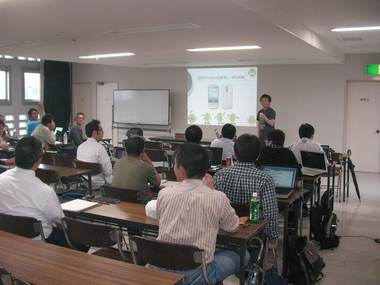
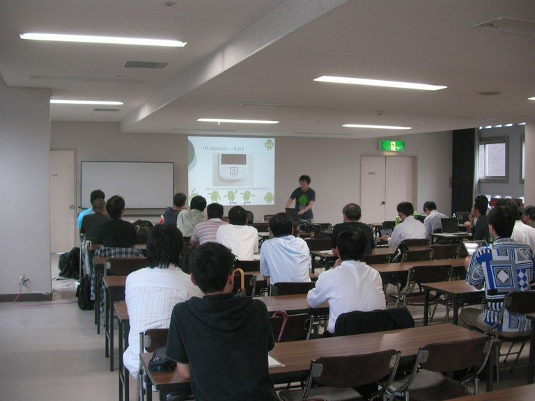
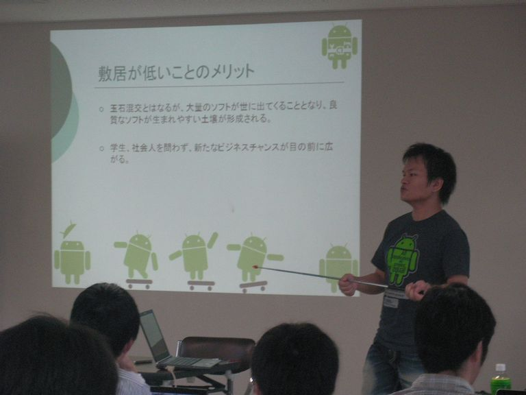
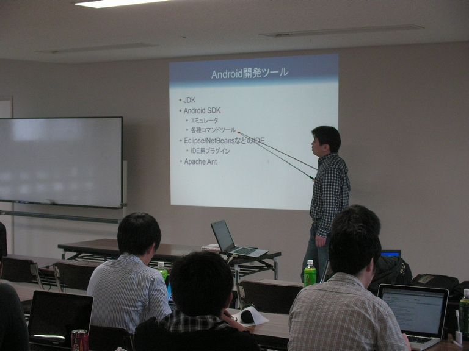
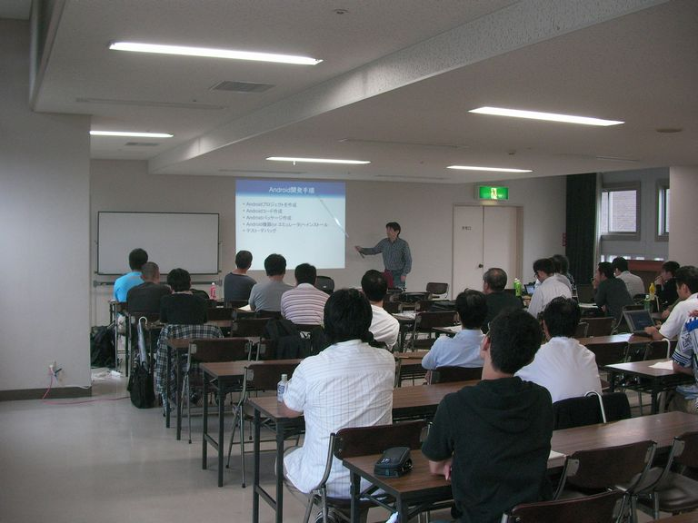
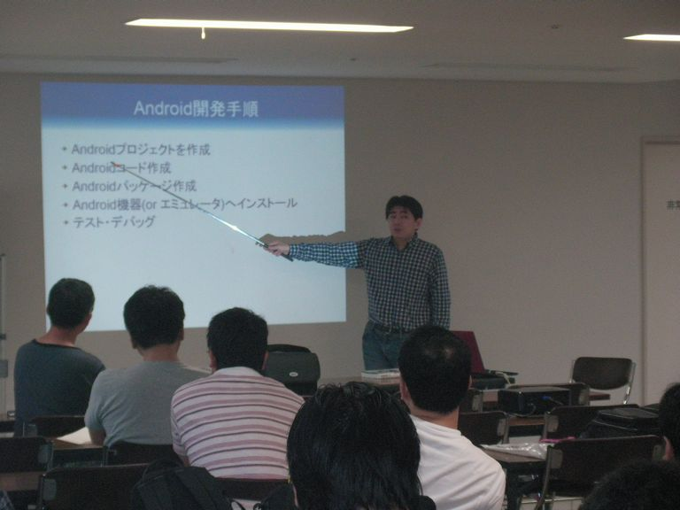
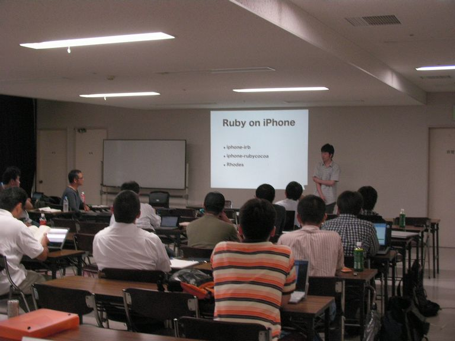
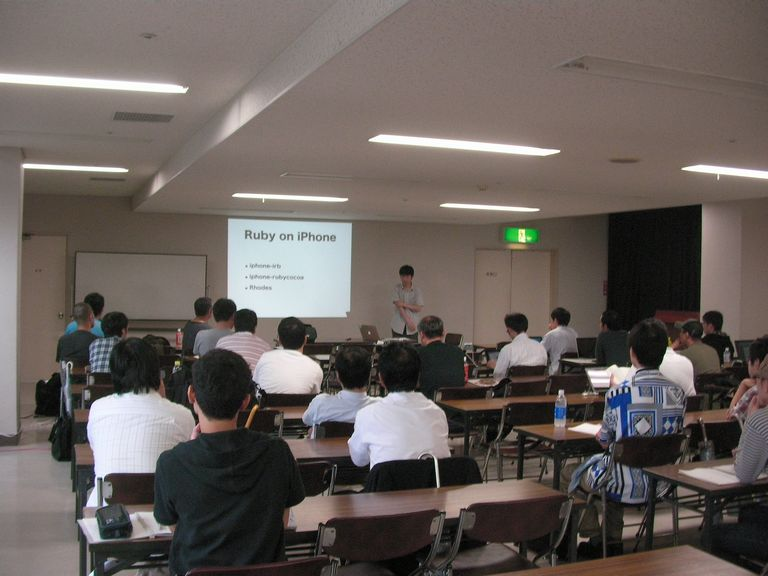
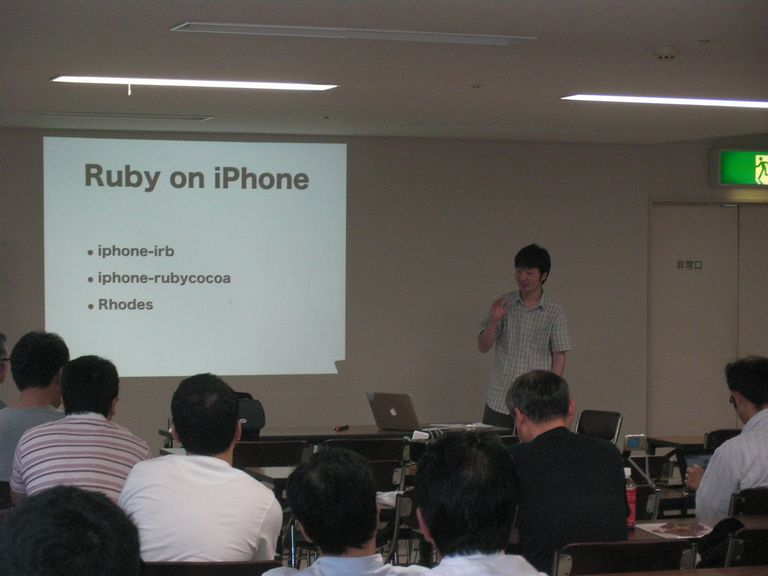
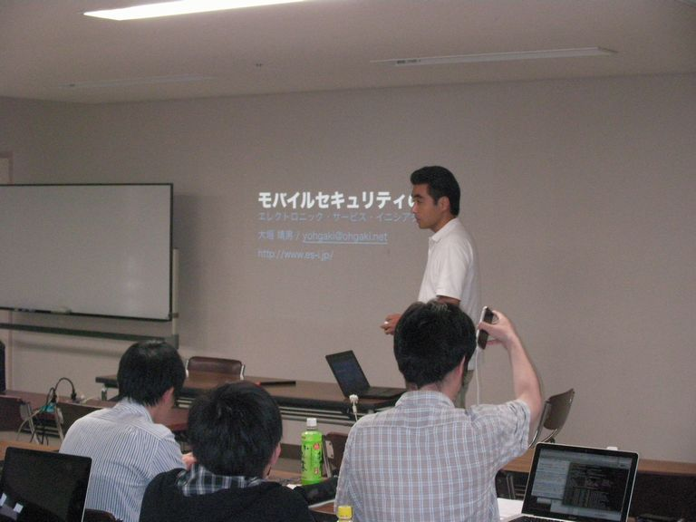
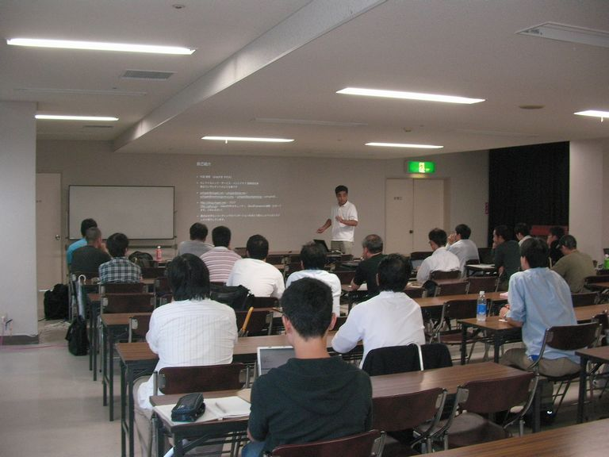
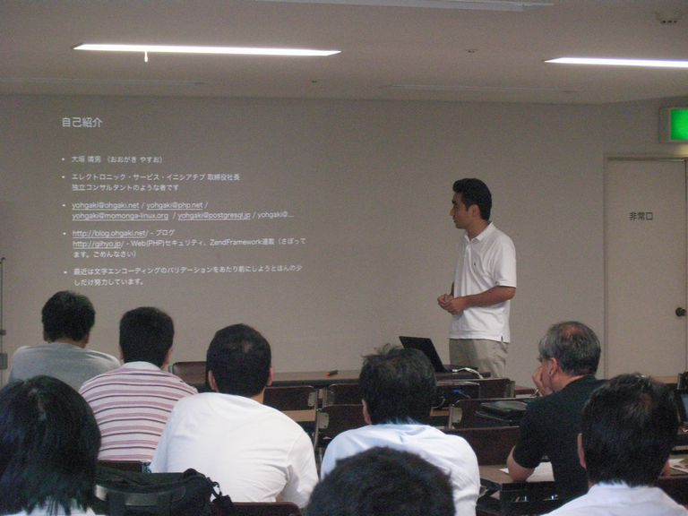
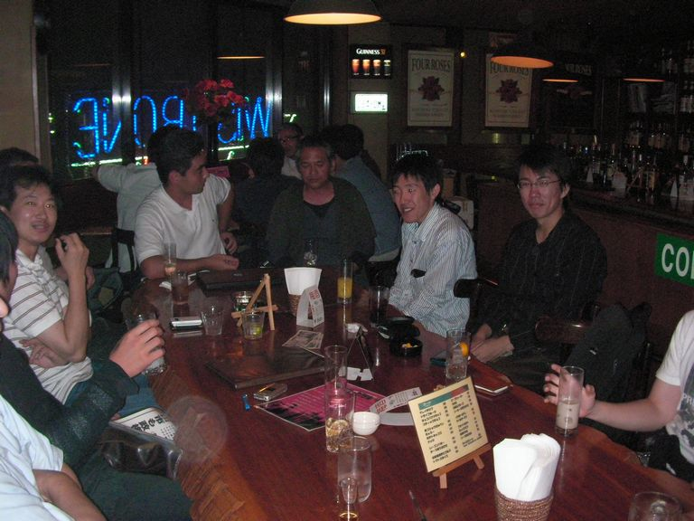
?参加申し込み方法
http://utage.org/enkai/menu.cgi?ENKAI_CODE=openlab20090912
?開催日時
2009年9月12日（土）13:00～17:00
?会場
岡山市民会館 ４階大会議室
http://www.okayama-shiminkaikan.com/
?参加費
500円（参加者数によって変化します。1000円以下と考えてください。）
参加者は運営委員を含めて参加費を負担していただきます。また(基本的には) 当日の講師/発表者も参加費を負担します。参加費は、会場にかかる費用等で 変動することがありますが、500円程度を目安にご負担いただいております。 この参加費は、当日必要な経費（会場・プロジェクタ代）などに活用します。 余剰金がでた場合には、次回開催時の費用に当てます。
?懇親会
岡山駅近辺で考えています。
?参加登録
http://utage.org/enkai/menu.cgi?ENKAI_CODE=openlab20090912
?主催
オープンラボ岡山 実行委員会
?共催
- 岡山Javaユーザ会( http://java.okaya.ma/ )
- 瀬戸内Linuxユーザ会（ http://www.stlug.org/ )
- LinuxKernelHackJAPAN( http://hira-consulting.com/wiki )
- オープンセミナー＠岡山実行委員会( http://openseminar.okaya.ma/ )
- 日本PostgreSQLユーザ会 中国支部( http://www.postgresql.jp/ )
?内容
開始時刻は目安です。前後する可能性がありますので、途中から参加される方は余裕を持ってご来場ください。
- 13:00頃～20分程度 自己紹介タイム
- 13:20頃～14:00 AndroidのUIいろいろ
- 講師：重村浩二（日本Androidの会幹事/中国支部長）
- 概要：AndroidのUIについて、少し掘り下げてみましょう
- 14:00頃～14:50 ScalaからはじめるAndroidアプリ
- 講師：西本 圭佑
- 概要：ScalaからAndroidアプリを作成する手順、Scalaでの長所短所
- 15:00頃～15:30 Ruby on iPhone
- 講師：moriq
- 概要：iPhoneアプリはRubyで書けるよ。iphone-rubycocoaとRhodesを紹介する予定です。
- 15:30頃～16:00 モバイル環境セキュリティの現状
- 講師：大垣 靖男 yohgaki@ohgaki.net
- 概要：モバイル環境のセキュリティの現状を解説します。
- 読書会
- 16:10頃～残り時間
- ガウディ本読書会
- 講師：岡山読み会
- 概要：「コンピュータプログラミングの概念・技法・モデル」という本を読みます
告知文
メール送信用の告知文です。自由に転送ください。
オープンラボ岡山 オープンラボ岡山とは、岡山周辺の技術者のための勉強会プラットフォームとして、 勉強会や読書会の場を提供するための組織です。勉強会や読書会を開催したい方、 参加したい方が簡単に集まることの出来る場にしたいと考えています。運営委員は 全員ボランティアで、それぞれが勉強会や読書会の主催者でもあります。興味のあ る方は是非とも一緒にやりましょう。 ■名称： 第3回 オープンラボ岡山 ■参加申し込み方法 http://utage.org/enkai/menu.cgi?ENKAI_CODE=openlab20090912 ■参加費： 1000円以下（参加者数によって変化します。） ■開催日時： 2009年9月12日（土曜日） 13:00～17:00 ■開催場所： 岡山市民会館 ４階大会議室 http://www.okayama-shiminkaikan.com/ ■主催: オープンラボ岡山 実行委員会 ■共催： -岡山Javaユーザ会( http://java.okaya.ma/ ) -瀬戸内Linuxユーザ会（ http://www.stlug.org/ ) -LinuxKernelHackJAPAN( http://hira-consulting.com/wiki ) -オープンセミナー＠岡山実行委員会( http://openseminar.okaya.ma/ ) -日本PostgreSQLユーザ会 中国支部( http://www.postgresql.jp/ ) ■懇親会： 岡山駅近辺で考えています。 ---------------------------------------------------------------------- ■13:00頃～13:20 20分程度 自己紹介タイム ■13:20頃～14:00 40分程度 タイトル：AndroidのUIいろいろ 講師：重村浩二（日本Androidの会幹事/中国支部長） 概要：AndroidのUIについて、少し掘り下げてみましょう ■14:00頃～14:50 50分程度 タイトル：ScalaからはじめるAndroidアプリ 講師：西本 圭佑 概要：ScalaからAndroidアプリを作成する手順、Scalaでの長所短所 ■15:00頃～15:30 30分程度 タイトル：Ruby on iPhone 講師：moriq 概要：iPhoneアプリはRubyで書けるよ。iphone-rubycocoaとRhodesを紹介する予定です。 ■15:30頃～16:00 30分程度 タイトル：モバイル環境セキュリティの現状 講師：大垣 靖男 yohgaki@ohgaki.net 概要：モバイル環境のセキュリティの現状を解説します。 ■16:10頃～残り時間 読書会 -ガウディ本読書会（残り時間） 【発表者名】岡山読み会 【概要】「コンピュータプログラミングの概念・技法・モデル」という本を読みます
Copyright(C)2009 オープンラボ岡山運営委員会 All rights reserved.